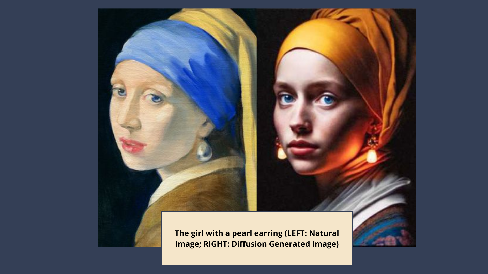
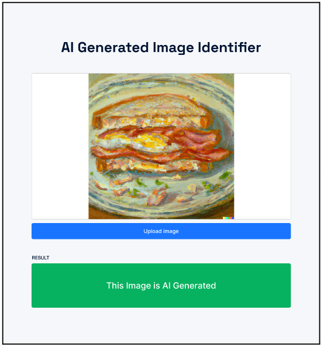

Distinguishing Diffusion-Generated Images from
Natural Images using a CNN Model Built from Scratch

This project explored the capability of Convolutional Neural Networks (CNNs) in distinguishing diffusion-generated images created by the Stable Diffusion model from natural images sourced from the LAION-5b dataset. By implementing multiple CNN configurations, the research demonstrated high accuracy in identifying key features differentiating the two image classes. The study also tested other models, such as MLP and EfficientNet-based architectures, with CNN emerging as the most reliable and consistent performer across diverse configurations. These findings establish a foundation for understanding how AI-generated images can be identified, which is crucial in the growing field of generative AI.
Challenges:
- Data Limitations:
- The LAION-5b dataset, while extensive, required rigorous filtering to ensure relevance and quality.
- Balancing the dataset between diffusion-generated and natural images posed a challenge in maintaining class distribution.
- Model Optimization:
- Identifying optimal hyperparameters (e.g., convolutional layers, dropout rates, and learning rates) required extensive experimentation.
- Ensuring the CNN model generalized well across unseen data without overfitting was a critical hurdle.
- Evaluation Metrics:
- Comparing performance across multiple models (e.g., CNN, MLP, and EfficientNet variants) required careful metric selection to ensure fair and meaningful evaluations.
- The trade-off between model complexity and performance had to be balanced, particularly for resource-intensive configurations like MC-EffNet-2.
Learnings:
- Effectiveness of CNNs:
- The CNN model consistently performed well across configurations, demonstrating its suitability for distinguishing diffusion-generated images.
- Simplicity in architecture, compared to more complex models, provided reliability and ease of tuning.
- Importance of Preprocessing:
- Preprocessing techniques such as resizing (512x512) and normalization significantly enhanced model performance and reduced training time.
- Uniform image dimensions and pixel standardization ensured comparability across datasets.
- Generalization Across Models:
- While MC-EffNet-2 achieved the highest accuracy, its performance variance and computational demands made CNN the preferred choice for reliability.
- Training models from scratch allowed flexibility and deeper understanding of model behavior.
Conclusion:
The project successfully demonstrated the efficacy of CNNs in distinguishing diffusion-generated images from natural ones. By leveraging large-scale datasets and implementing robust preprocessing techniques, the research highlighted the potential of tailored deep learning architectures for this novel challenge. The findings provide a strong foundation for future advancements in generative AI detection and its applications in various domains.
Prototype:
The prototype itself does not hold significant prominence within the context of this research paper. Rather, its purpose lies in the demonstration of the developed model's capabilities and its successful integration into an accessible system. Thus, limited emphasis is placed on the details and intricacies of the prototype within the scope of this study.